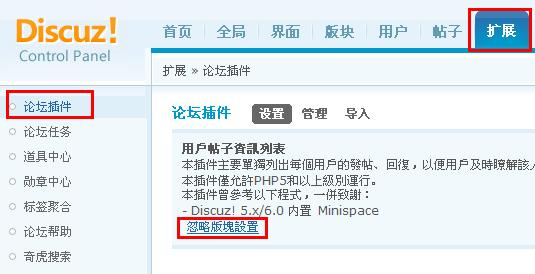

For Discuz! 7.0
安裝使用說明書
插件名稱：會員查看其他用戶主題和回復For Discuz! 7.0
版本：Ver 0.0.1 Build 20091113 Rev 87 For Discuz! 7.0
插件有限支持鏈接：http://code.google.com/p/discuzplugin-hl/wiki/MyAttachmentsViewer
第一原作者: Horse Luke（中文名稱：竹節虛）
第一原作者基於Apache License協議授權開源。
插件說明：
該插件原模型來源於Discuz! 5.x/6.0 Minispace的一個子功能（同時也是Discuz! 7.2即將重返的功能）：會員可以查看其他用戶的主題和回復。
對於用戶而言，此功能能更快捷地及時瞭解該人資訊；而對於管理員而言，則方便其及時找出廣告ID的帖子進行針對性的刪除和移動。
本插件同時支持Ajax和非Ajax讀取。請注意，由於開發需求，本插件僅支持PHP5.0.0及以上版本。
本插件採取面向過程（後臺檔）和麵向對象（前臺檔）的編程方法。
適合的論壇版本：
Discuz! 7.0
安裝方法：
1、在論壇後臺確認你的伺服器運行著的PHP版本，若低於5.0.0（即為4.x.x）的，則不能安裝此插件。

2、不是繁體UTF8的論壇用戶可直接上傳upload檔夾內的的所有檔到論壇根目錄。
但是假如是繁體UTF8的論壇，在上傳前，請進入upload檔夾內的plugins\iirs_userPostList\App\Lang，將檔“utf-8.php”刪除，然後將“TC-utf-8.php”改名為“utf-8.php”，最後才將upload檔夾內的的所有檔到論壇根目錄。
3、進入論壇後臺的插件欄目，按照你論壇的編碼將import檔夾對應的插件配置檔導入。
4、後臺配置插件（假如你不需要特別隱藏某些版塊的主題和回復，可省略）。

5、修改檔。請注意做好備份！（修改檔部分.txt也有本片段）
（1）打開templates\default\viewpro_classic.htm。找到：
<li class="pm"><a href="pm.php?action=new&uid=$member[uid]" onclick="floatwin('open_sendpm', this.href, 600, 410);return false;">{lang send_pm}</a></li>
並在上面加上：
<li class="searchpost"><a href="userpostlist.php?action=getThreadlist&uid={$member[uid]}" onclick="floatwin('open_iirs_userPostList_{$uid}', this.href, 600, 410);return false;">查看發表的主題</a></li>
<li class="searchpost"><a href="userpostlist.php?action=getPostlist&uid={$member[uid]}" onclick="floatwin('open_iirs_userPostList_{$uid}', this.href, 600, 410);return false;">查看回復的帖子</a></li>
（2）打開templates\default\viewthread_node.htm。找到：
<a href="space.php?uid=$post[authorid]" target="_blank" title="{lang member_viewpro}"><img src="{IMGDIR}/userinfo.gif" alt="{lang member_viewpro}" /></a>
並在上面加上：
<a href="userpostlist.php?action=getPostlist&uid={$post['authorid']}" onclick="floatwin('open_iirs_userPostList_{$post['authorid']}', this.href, 600, 410);return false;"><img src="plugins/iirs_userPostList/Public/Images/comments.gif" alt="查看回復的帖子" title="查看回復的帖子" /></a>
使用方法：
（1）在看貼介面上，移動到每個人的頭像，在彈出的“主題內容頁個人資料框圖標區域”中有個新增的小圖示，點擊後即可ajax查看其回復的內容。
（2）或者，在每個人的個人資料頁中，側邊頭部將有兩個新增的鏈接：“查看發表的主題”和“查看回復的帖子”。點擊即可ajax查看，或者右鍵非ajax查看。
（3）關於後臺設置：
由於Discuz!的許可權設置及檢查較為分散，出於效率的考慮，目前該插件無法自動禁止以下版塊的帖子顯示在列表中：
1、設置了訪問密碼的版塊；2、設置了許可權運算式的版塊
如果論壇有上述所說的版塊，或者想額外忽略一些板塊，請在這裏手動設置。
設置成功後，插件將強制忽略這些板塊的帖子（不管用戶是否存在對本版塊的訪問許可權）。
版本歷史：
Ver 0.0.1 Build 20091113 Rev 87（當前）：
新增：將本插件從僅支持7.1進行代碼修改遷移，從而派生出新分支。該分支將支持Discuz! 7.0。
COPYRIGHT NOTICE
----------------
Copyright 2008 Horse Luke（竹節虛）.
Licensed under the Apache License, Version 2.0 (the "License");
you may not use this file except in compliance with the License.
You may obtain a copy of the License at
http://www.apache.org/licenses/LICENSE-2.0
Unless required by applicable law or agreed to in writing, software
distributed under the License is distributed on an "AS IS" BASIS,
WITHOUT WARRANTIES OR CONDITIONS OF ANY KIND, either express or implied.
See the License for the specific language governing permissions and
limitations under the License.